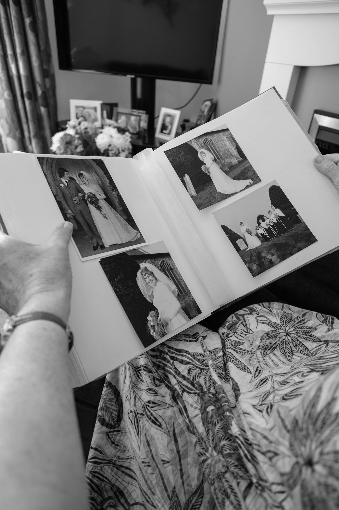
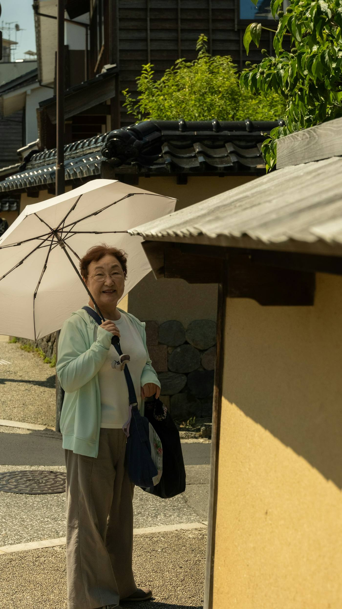

できあがる本の見本
第三章
はじめての給料
昭和四十三年の春、町の工場に勤めはじめた。最初の給料は封筒に入った現金で、帰りに母へ羊羹を買った。
「あんなに喜んだ顔は、あとにも先にも見たことがない」と、今でも笑って話す。
— 34 —

お預かりした写真を、本文の近くに配置します
— 35 —
見本（架空の文章です）。実際の本は、録音されたご本人の言葉をもとに作ります。
録音から本が届くまで
一
質問リストが届く
話を引き出す質問を、章ごとにお送りします
二
帰省中に録音
スマホで30分×2回。こたつで雑談のように
三
原稿を確認
AIがまとめた原稿を、ご家族で確認・修正
四
本のデータが届く
スマホで読めるPDFと、印刷用のPDFをお届け
原稿を確定してから、約1週間でデータをお届け。紙の本が欲しい方は、印刷サービスに1冊から注文できます（注文方法をご案内します）。
たとえば、こんなことを聞きます
子どものころ、いちばん好きだった遊びは？第一章 生まれた町
はじめての仕事と、最初の給料の使いみちは？第三章 働く
結婚を決めたのは、どんな日でしたか？第四章 家族
いちばん大変だった時期を、どう乗り越えた？第五章 山と谷
孫に伝えておきたいことは？第七章 これから
もう一度行けるなら、どこへ行きたい？第七章 これから
料金（予定）
通常予定 9,800円
7,800円（税込・先行登録価格）
- スマホで読めるPDF＋A5判の印刷用PDF
- 約60ページ・写真10枚まで
- 原稿の修正2回まで
- 紙の本は、印刷サービスに直接ご注文いただけます（印刷代は別）

もうひとつのプラン（検討中）
月980円
毎週1つ、LINEで親に質問が届きます。答えは声でも文字でもOK。1年たつと、52の話が一冊の本のデータになります。
よくある質問
録音した音声はどう扱われますか？
本の制作のためだけに使い、お届け後に削除します。録音する前に、ご本人の了解を得てください。
紙の本にできますか？
はい。印刷用のPDFをお渡しするので、オンラインの印刷サービスに1冊から注文できます。ご実家へ直接届けることもできます。
話すのが苦手な親でも大丈夫？
質問リストに沿って、答えてもらうだけで大丈夫です。話があちこちに飛んでも、AIが章ごとに整理します。
この年末、親の話を残しませんか。
特別価格と質問リストをお送りします。